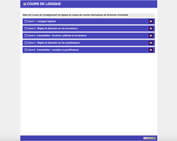
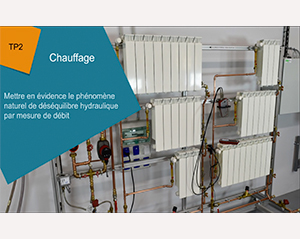

Projets
Quelques exemples de réalisations professionnelles.
Conception de micro-contenus de formation dans le cadre du projet PUNCHY
Création de contenus numériques pédagogiques spécifiquement adaptés à la réutilisation et s'appuyant sur la technologie open source H5P. Un des sous-projets PUNCHY est l'occasion d'un travail de reprise de contenus devenus techniquement obsolètes avec l'abandon d'Adobe Flash : une trentaine d'exposés/cours vidéo ainsi qu'une centaine de séances de quiz soit près de 150 modules de Français Langues Étrangères ont ainsi pu être remis en état de marche.
Lire la suite →
Réalisation de modules e-learning "Bâtiment Travaux Publics"
Conception et réalisation de 4 modules e-learning multimédia pour VINCI Construction en collaboration avec l’ESTP Paris.
Conduite de projet en binome UNIT et en lien avec l’équipe projet ESTP : définition du parcours, des différents écrans, des interactions conformément au document storyboard de chacun des modules. Phase préparatoire, maquette graphique, rendu livrable, recettage, livraison finale des modules...
Lire la suite →

Collection Les grains d’UNIT
Le projet a pour ambition de constituer un ensemble de capsules vidéo et d'exercices sur le modèle de mini-cours. Ces grains pédagogiques sont destinés à être réutilisés par les enseignants ou les établissements pour l'élaboration de cours. Ce projet a été lauréat d'un appel à manifestation d'intérêt du MESRI en 2016 - Thématique 4 "Production - éditorialisation de ressources pédagogiques et accompagnement de leurs usages".
Lire la suite →
Vidéo de démonstration d'un projet de plateforme e-learning pour les Métiers du BTP
Collaboration à la mise en place d’un prototype de plateforme sur Moodle pour la formation en ligne en BTP dans le cadre d’une réponse à appel à projets. Réalisation d’un espace de cours exemple sur la thématique du Terrassement avec des contenus démo en différents formats, et en exploitant notamment l’intégration d’activités H5P dans Moodle.Réalisation d’un clip vidéo démo de la platefome de formation en ligne autour des métiers du BTP pour accompagner le dossier projet et la plaquette de présentation et démarcher d’autres partenaires...
Lire la suite →

Rééditorialisation d'un cours de logique de Licence Informatique
Projet de reprise et transformation de contenus relatifs à 5 cours de l'enseignement de logique du cursus de Licence Informatique de Sorbonne Universités.
Regroupement des fichiers vidéos existants, reprise et transformation des contenus, assemblage et montage des vidéos, intégration avec la chaine éditoriale Scenari, édition en LaTex dans Scenari Opale pour la réalisation de quiz HTML et leur intégration dans les modules concernés, enrichissement des modules avec différents compléments...
Lire la suite →
Vidéo de promotion des "Métiers de la bio-informatique"
Projet de création d'une collection de vidéos sur "Les métiers du numérique", à destination d'un public jeune en voie d'orientation
Conduite du projet en binôme avec l'enseignant-chercheur référent de l'ENPC,
En charge de l'ensemble des aspects de réalisation :
- Participation à la définition du format de vidéo
- réalisation du storyboard en collaboration avec l'enseignant-référent et les intervenants
- Préparation, organisation et réalisation des tournages
- Prise de son pour commentaire sur images
- Montage vidéo, habillage graphique, motion design, musique, sous-titres.
- Mise en ligne de la maquette pour validation
- Diffusion de la vidéo finale
Lire la suite →

Réalisation de TPs vidéo dans le cadre du Projet inPACTE
Partenariat avec UNIT dans le cadre d'une convention de prestation.
- Contribution à la définition de la maquette TP Vidéo
- Réalisation des supports numériques des "TP du bon geste" pour 2 parcours de formation : 7 livrables vidéo pour la thématique Chauffage et 7 livrables vidéo pour la thématique Enveloppe (montage, animation, habillage graphique) en respectant le modèle défini.
- Contribution à la maquette graphique de la plaquette com' du projet
- Participation au film teaser visant à promouvoir l’offre de formation InPacte destinée aux artisans et métiers du bâtiment.
Lire la suite →